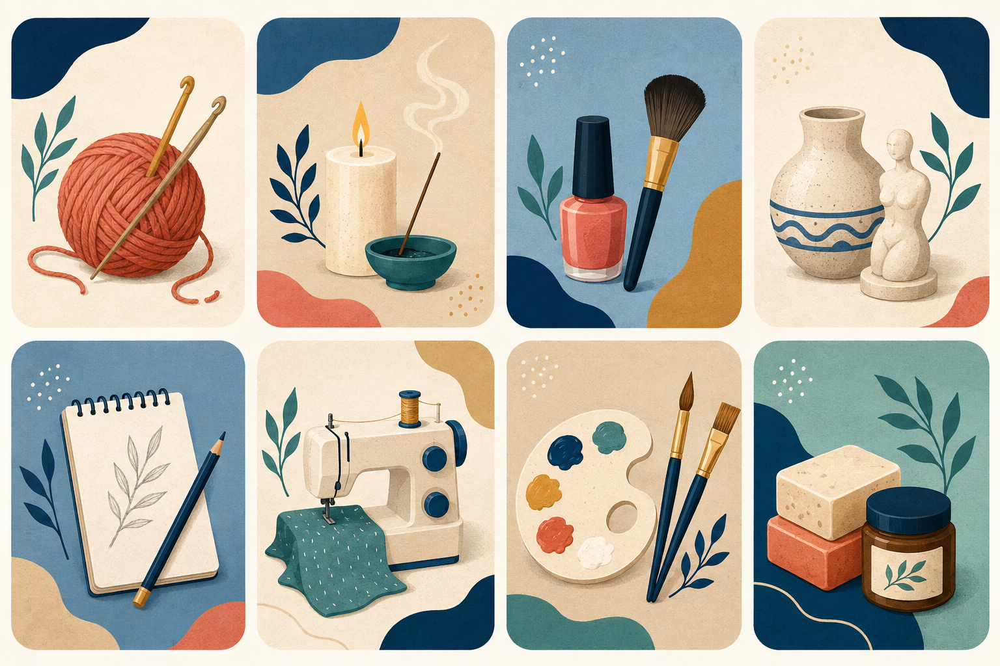

Centro Vecinal · 351 759-0445
Centro Vecinal · 351 759-0445Nace el barrio
El loteo se desarrolló al sur de la antigua Estancia Adela y al norte del canal de riego Constitución.
Barrio Patricios · Córdoba Capital
Actividades, talleres, salud y servicios para vecinos de todas las edades.
Somos un punto de encuentro para acompañar, conectar y hacer crecer a nuestro barrio.
Conocé el centroPara moverte, aprender y compartir
Elegí la propuesta que más te guste. Ingresá a cada actividad para conocer de qué se trata y consultar disponibilidad.
Música y movimiento en grupo, con distintos ritmos e intensidad baja e intermedia.
Lunes 19 a 20 h · Miércoles 20 a 21 h
Ver informaciónUna práctica progresiva para explorar el movimiento, el equilibrio y la conciencia corporal.
Martes · 16:45 h
Ver informaciónTaekwondo y defensa personal para todas las edades, sin requisitos previos.
Martes y viernes · 18 a 19 h
Ver informaciónMovimiento y encuentro para personas mayores. Consultá a María Elena por la propuesta y cómo participar.
Días y horarios a consultar
Ver informaciónPasos, figuras y expresión de nuestras danzas. Para todas las edades, sin experiencia previa.
Para todas las edades · Horarios a consultar
Ver informaciónDanza y expresión corporal para niños de 8 a 11 años, con música, juegos y coreografías.
Martes y viernes · 19 a 20 h · 8 a 11 años
Ver informaciónCuidarnos también es comunidad
Ingresá a cada servicio para conocer de qué se trata, sus horarios y consultar directamente por WhatsApp.
Jueves 9 a 13 h
Jueves 9 a 13 h
Ver informaciónConsultar días y turnos
Consultar días y turnos
Ver informaciónViernes · con turno previo
Viernes · con turno previo
Ver informaciónMartes 9:30 a 13:30 h · Sábados 17:30 a 20:30 h
Martes 9:30 a 13:30 h · Sábados 17:30 a 20:30 h
Ver información
Ideas que se convierten en oportunidades
Contamos con propuestas semanales de tejido, velas y sahumerios, uñas y maquillaje, yeso y cerámica, dibujo para niños, corte y confección, pintura, jabones y cosméticos, además de un taller recreativo para niños.
Ver días y horariosUn espacio para celebrar
Un espacio para reuniones y celebraciones con capacidad para 80 personas, según la información del centro. Cuenta con mesas redondas y sillas, cocina equipada, aire acondicionado y ventiladores, Wi-Fi y patio cubierto con asador. Consultá disponibilidad y qué incluye el alquiler.
Nuestra identidad
Patricios nació en 1954 como un loteo de viviendas impulsado por el sindicato de la Unión Ferroviaria, con créditos del Banco Hipotecario en el marco del Plan Eva Perón. Su historia está ligada al trabajo, la vivienda y la organización de sus vecinos.
El loteo se desarrolló al sur de la antigua Estancia Adela y al norte del canal de riego Constitución.
La biblioteca popular Almafuerte, vinculada al espacio del Centro Vecinal, fue fundada el 27 de mayo de 1967.
El barrio continúa creciendo desde la participación: actividades, servicios, cultura, salud y mejoras que nacen del trabajo colectivo.
La vida del centro
Tu voz cuenta
Contanos qué sucede y en qué lugar del barrio. El centro vecinal podrá recibir tu consulta y orientar su seguimiento.
Completá el formulario para que la comisión reciba tu reclamo o sugerencia. Tus respuestas no se publican en la web.
Completar formularioEnviar reclamo por WhatsApp Enviar por correoEste canal no reemplaza un servicio de emergencias ni un reclamo formal ante la empresa prestadora.
Estamos para escucharte
La atención se coordina previamente por WhatsApp. Comunicate por nuestros canales oficiales o encontranos en Celestino Vidal esquina Luis Vernet.


 Instagram
Instagram